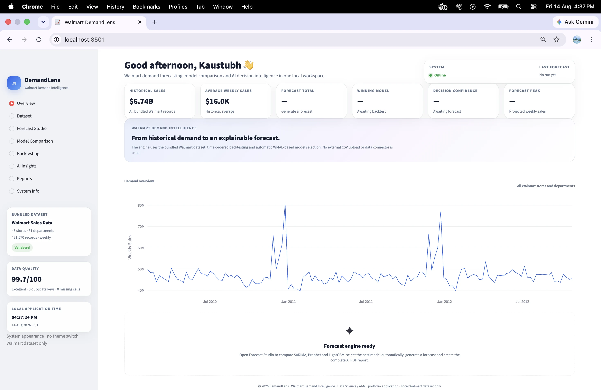
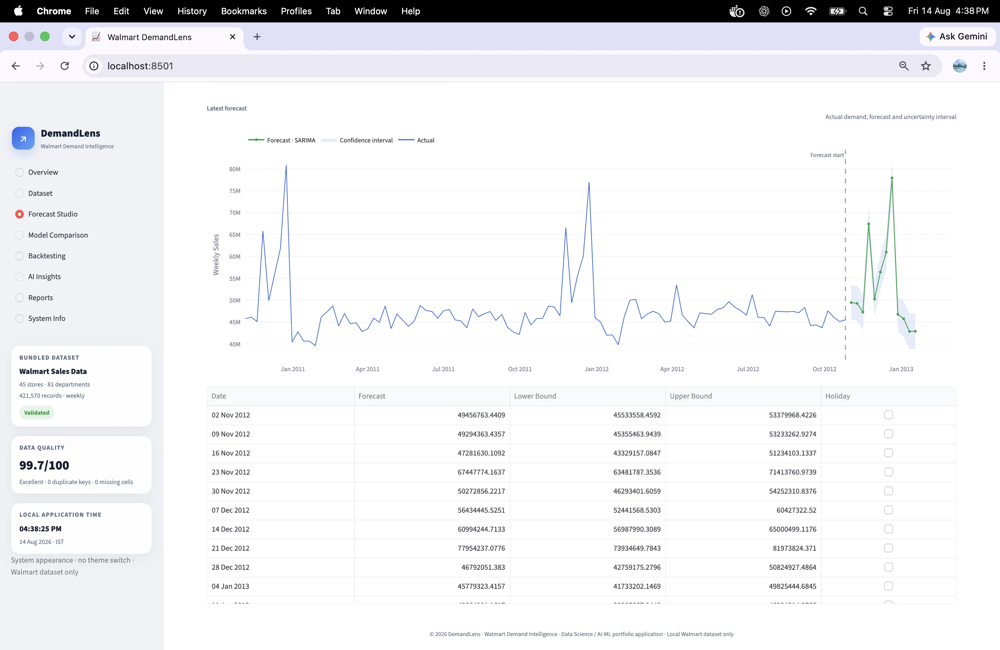
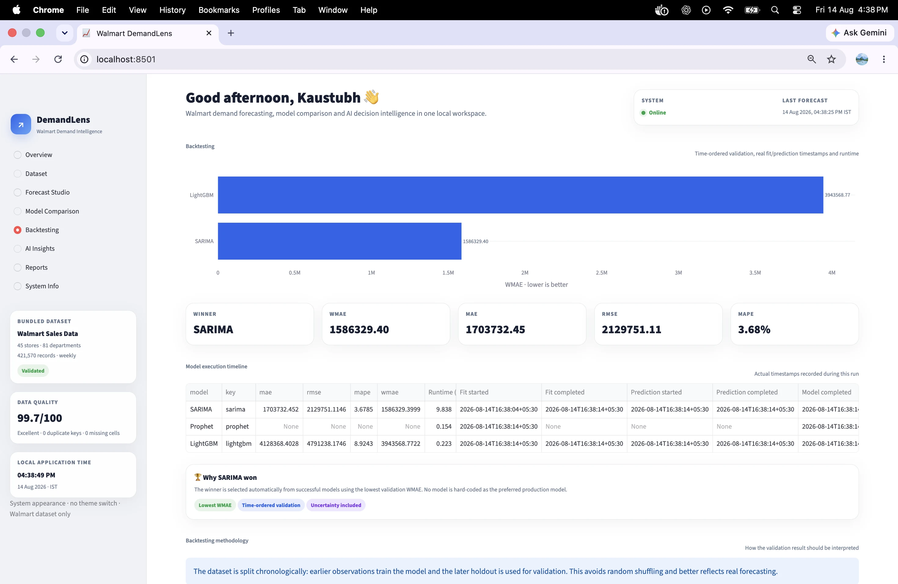

From historical demand to validated forecasts.
DemandLens follows a reproducible forecasting lifecycle using the Walmart M5 Forecasting Accuracy dataset. The workflow covers data quality and aggregation, chronological validation, model comparison, automatic winner selection, uncertainty-aware forecasting, AI-assisted decision intelligence and report generation.
From demand data to business insight.
The Forecasting Challenge
Retail demand changes over time across products and stores. Reliable forecasting therefore requires chronological validation, model comparison and a workflow that can translate forecasts into useful planning information.
The Forecasting Pipeline
DemandLens compares statistical and machine-learning forecasting approaches using chronological validation. The strongest validated model is selected, forecasts and uncertainty information are presented, and the resulting output is converted into decision-oriented insights and reports.
From Forecast to Planning
The application is Docker-ready and has been deployed through an AWS ECS endpoint used for the portfolio live demo.
Inside the Application.


